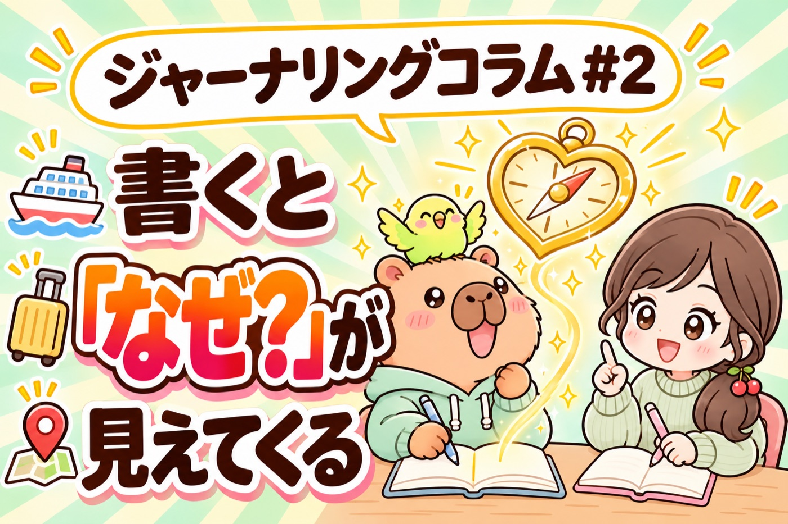
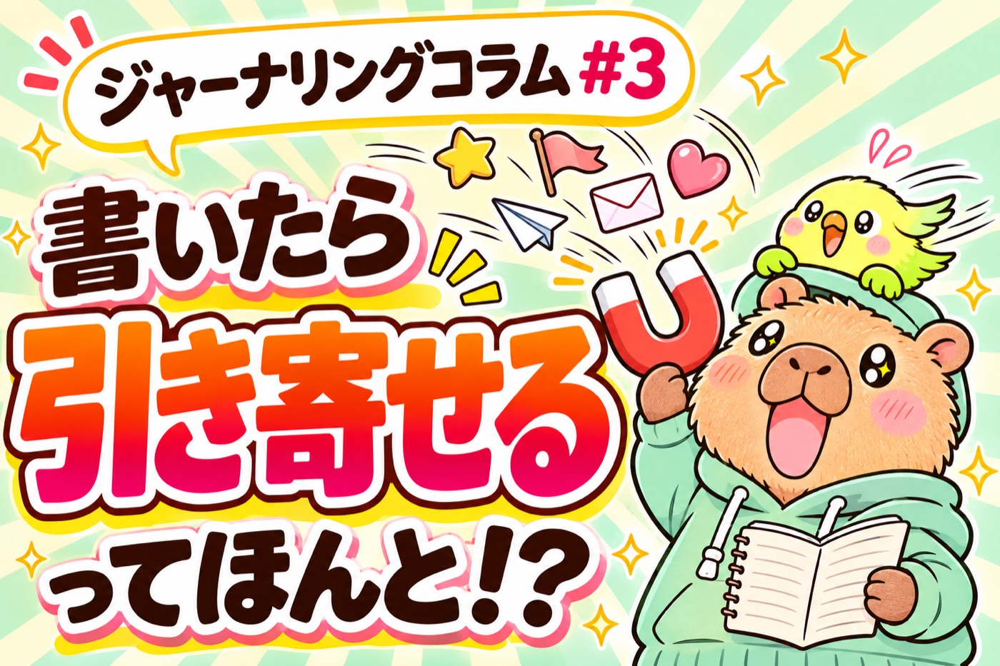

まずは目的地にピンを立ててみよ📍
やりたいことを1行だけ書いてみて。この端末の中だけに残り、誰にも送られへんから本音で大丈夫やよ
今朝の最新コラム☀️

決めれば、叶う。
うまくいっている人は、まず決めている。いきなり大きくなくていい、今日のごはんから。🎧音声つき
▶ 読む・聴く今日の問いをめくってみよ🃏
1日1枚めくってみてな。うまく書かんでええよ、1行だけで花マルやで
？
あ、これ私も書こ！浮かんだ1行だけでええよ✨
毎朝ふえる冒険の地図🗺️
毎朝のコラムが立ち寄り地として増えていくよ。読んだらラジオ体操みたいにハンコを押して遊んでな
冒険の旅じたく🎒
ハンコを押すたびに持ち物が増えるよ。インコも何が出るかワクワクやて
コラムは毎朝増えるよ。のんびり埋めていこな🎒
あなたの足あと🐾1日休んでも消えへんよ。継続力ない私のこだわりやからな🤣
ハンコ 0 / 4
-
-

-

-
-
書いた目標は、変わっても大丈夫
明日の朝、霧が晴れるよ☁️
この道のゴール最高の未来
30日後の私へタイムカプセル💌
30日後の私へ1行だけ書いて封をしよ。この端末の中だけに眠るから、誰にも見られへんよ✨
おけもんの朝コラムって？📖
ストレングスファインダー認定コーチのおけもんが、毎朝しゃべった話をコラムとラジオで届けてるよ。自分のことも強みも分かって、最高の未来が叶う連載をめざして、ゆるーく更新中です☕
一人やと続かへんけど書く習慣をつけたいな、って人に来てほしいよ。偉そうに語ってる私も、じつはみんなと一緒に続けてる最中やから安心してな🤣 うまく書かんで大丈夫、今日ひとこと書いてみよ！